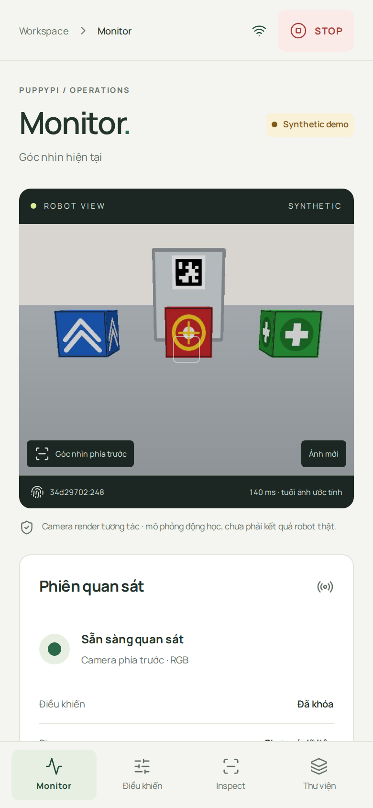
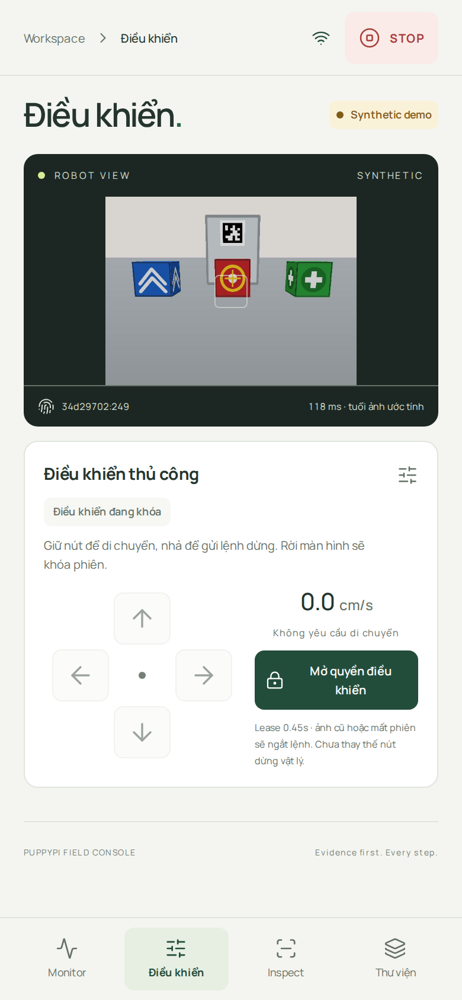
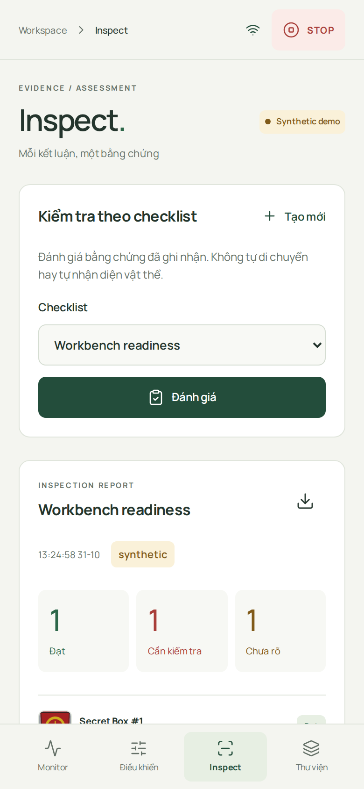
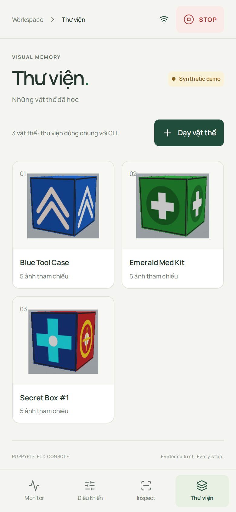

Actual Chromium captures at 390 × 844 CSS px. Synthetic camera and scripted demo evidence; no physical robot connected.

Observe camera freshness and host status. Unavailable battery/pose data stays explicit.

Explicitly arm, hold a direction, release to request zero. STOP remains accessible.

Assess recorded assertions and export source evidence. Camera annotation continues below the fold.

Teach objects from crops; open their references, observation history and management actions.